Topics on this page
- Regular Exams and Cleanings
- Bonding
- Bridges
- Crowns
- Dentures
- Extractions
- Fillings
- Fluoride
- Implant Restoration
- Mouthguards
- Nightguards
- Root Canals
- Sealants
- Veneers
- Wisdom Teeth
Regular Exams and Cleanings
Regular exams are an important part of maintaining your oral health. During your regular exam, we will:
- Check for any problems that you may not see or feel
- Look for cavities or any other signs of tooth decay
- Inspect your teeth and gums for gingivitis and signs of periodontal disease
- Perform a thorough teeth cleaning
Your regular exam will take about 45 minutes. Each regular exam includes a detailed teeth cleaning, in which we will clean, polish, and rinse your teeth to remove any tartar and plaque that have built up on the tooth’s surface.
Visiting our office every six months gives you the chance to talk to the doctor about any questions you may have about your oral health. Regular exams are offered by appointment only, so please contact our practice today to schedule your next dental exam and teeth cleaning.
Bonding
Bonding is a conservative way to repair slightly chipped, discolored, or crooked teeth. During dental bonding, a white filling is placed onto your tooth to improve its appearance. The filling “bonds” with your tooth, and because it comes in a variety of tooth-colored shades, it closely matches the appearance of your natural teeth.
Tooth bonding can also be used for tooth fillings instead of silver amalgam. Many patients prefer bonded fillings because the white color is much less noticeable than silver. Bonded fillings can be used on front or back teeth, depending on the location and extent of tooth decay.
Bonding is less expensive than other cosmetic treatments and can usually be completed in one visit to our office. However, bonding can stain and is easier to break than other cosmetic treatments, such as porcelain veneers. If it does break or chip, tell your doctor. The bonding can generally be easily patched or repaired in one visit.
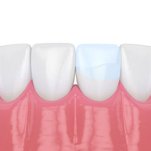
Bridges
A bridge may be used to replace missing teeth, help maintain the shape of your face, and alleviate stress on your bite.
A bridge replaces missing teeth with artificial teeth, looks great, and literally bridges the gap where one or more teeth may have been. Your bridge can be made from gold, alloys, porcelain, or a combination of these materials and is bonded onto surrounding teeth for support.
The success of any bridge depends on its foundation — the other teeth, gums, or bone to which it is attached. Therefore, it’s very important to keep your existing teeth, gums, and jaw healthy and strong.
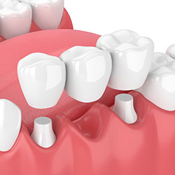
Crowns
Crowns are a restorative procedure used to improve your tooth’s shape or to strengthen a tooth. Crowns are most often used for teeth that are broken, worn, or have portions destroyed by tooth decay.
A crown is a “cap” cemented onto an existing tooth that usually covers the portion of your tooth above the gum line. In effect, the crown becomes your tooth’s new outer surface. Crowns can be made of porcelain, metal, or both. Porcelain crowns are most often preferred because they mimic the translucency of natural teeth and are very strong.
Crowns or onlays (partial crowns) are needed when there is insufficient tooth strength remaining to hold a filling. Unlike fillings, which apply the restorative material directly into your mouth, a crown is fabricated away from your mouth. Your crown is created in a lab from your unique tooth impression, which allows a dental laboratory technician to examine all aspects of your bite and jaw movements. Your crown is then sculpted just for you so that your bite and jaw movements function normally once the crown is placed.
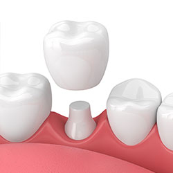
Dentures
Dentures are natural-looking replacement teeth that are removable. There are two types of dentures: full and partial. Full dentures are given to patients when all of the natural teeth have been removed. Partial dentures are attached to a metal frame that is connected to your natural teeth and are used to fill in where permanent teeth have been removed. Just like natural teeth, dentures need to be properly cared for. Use a gentle cleanser to brush your dentures, always keep them moist when they’re not in use, and be sure to keep your tongue and gums clean as well.
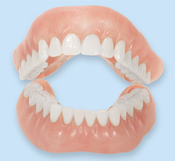
Extractions
There are times when it is necessary to remove a tooth. Sometimes a baby tooth has misshapen or long roots that prevent it from falling out as it should, and the tooth must be removed to make way for the permanent tooth to erupt. At other times, a tooth may have so much decay that it puts the surrounding teeth at risk of decay, so your doctor may recommend removal and replacement with a bridge or implant. Infection, orthodontic correction, or problems with a wisdom tooth can also require removal of a tooth.
When it is determined that a tooth needs to be removed, your dentist may extract the tooth during a regular checkup or may request another visit for this procedure. The root of each tooth is encased within your jawbone in a “tooth socket,” and your tooth is held in that socket by a ligament. In order to extract a tooth, your dentist must expand the socket and separate the tooth from the ligament holding it in place. While this procedure is typically very quick, it is important to share with your doctor any concerns or preferences for sedation.
Once a tooth has been removed, neighboring teeth may shift, causing problems with chewing or with your jaw joint function. To avoid these complications, your dentist may recommend that you replace the extracted tooth.
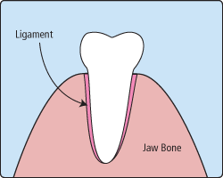
Fillings
Traditional dental restoratives, or fillings, are most often made of silver amalgam. The strength and durability of this traditional dental material makes it useful for situations where restored teeth must withstand extreme forces that result from chewing, often in the back of the mouth.
Newer dental fillings include ceramic and plastic compounds that mimic the appearance of natural teeth. These compounds, often called composite resins, are usually used on the front teeth where a natural appearance is important, but they can also be used on the back teeth depending on the location and extent of the tooth decay.
There are two different kinds of fillings: direct and indirect. Direct fillings are fillings placed into a prepared cavity in a single visit. They include silver amalgam, glass ionomers, resin ionomers, and composite (resin) fillings. Indirect fillings generally require two or more visits. They include inlays, onlays, and veneers. They are used when a tooth has too much damage to support a filling but not enough to necessitate a crown.
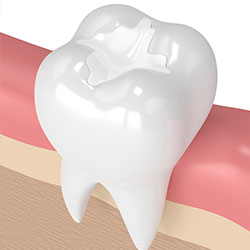
Fluoride
Fluoride is effective in preventing cavities and tooth decay and in preventing plaque from building up and hardening on the tooth’s surface. A fluoride treatment in your dentist’s office takes just a few minutes. After the treatment, patients may be asked not to rinse, eat, or drink for at least 30 minutes in order to allow the teeth to absorb the fluoride. Depending on your oral health or your doctor’s recommendation, you may be required to have a fluoride treatment every three, six, or 12 months.
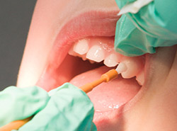
Implant Restoration
If you are missing teeth, it is crucial to replace them. Without all your teeth, chewing and eating can destabilize your bite and cause you discomfort. When teeth are missing, your mouth can shift and even cause your face to look older. Implants are a great way to replace your missing teeth, and if properly maintained, can last a lifetime!
An implant is a new tooth made of metal and porcelain that looks just like your natural tooth. It’s composed of two main parts: one part is the titanium implant body that takes the place of the missing root, and the second part is the tooth-colored crown that is cemented on top of the implant. With implant treatment, you can smile confidently knowing no one will ever suspect you have a replacement tooth.
In addition to tooth replacement, implants may be used to anchor dentures, especially lower dentures that tend to shift when you talk or chew. For patients with removable partial dentures, implants can replace missing teeth so you have a more natural-looking smile.
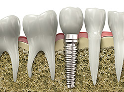
Mouthguards
Whether you wear braces or not, protecting your smile while playing sports is essential. Mouthguards help protect your teeth and gums from injury. If you participate in any kind of full-contact sport, the American Dental Association recommends that you wear a mouthguard. Choosing the right mouthguard is essential. There are three basic types of mouthguards: the pre-made mouthguard, the “boil-and-bite” fitted mouthguard, and a custom-made mouthguard from your dentist. When you choose a mouthguard, be sure to pick one that is tear-resistant, comfortable and well-fitted for your mouth, easy to keep clean, and does not prevent you from breathing properly. Your dentist can show you how to wear a mouthguard properly and how to choose the right mouthguard to protect your smile.
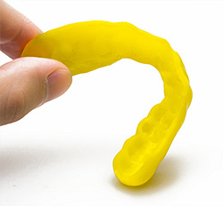
Nightguards
If you often wake up with jaw pain, earaches, or headaches, or if you find yourself clenching or grinding your teeth, you may have a common condition called “bruxism.” Many people do not even know that they grind their teeth, as it often occurs when one is sleeping. If not corrected, bruxism can lead to broken teeth, cracked teeth, or even tooth loss.
There is an easy, non-invasive treatment for bruxism: nightguards. Nightguards are an easy way to prevent the wear and damage that teeth-grinding causes over time. Custom-made by your dentist from soft material to fit your teeth, a nightguard is inserted over your top or bottom arch and prevents contact with the opposing teeth.
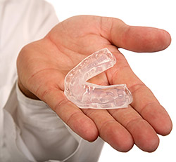
Root Canals
In the past, if you had a tooth with a diseased nerve, you’d probably lose that tooth. Today, with a special dental procedure called “root canal treatment,” your tooth can be saved. When a tooth is cracked or has a deep cavity, bacteria can enter the pulp tissue and germs can cause an infection inside the tooth. If left untreated, an abscess may form. If the infected tissue is not removed, pain and swelling can result. This can not only injure your jawbones, but it is also detrimental to your overall health.
Root canal treatment involves one to three visits. During treatment, your general dentist or endodontist (a dentist who specializes in problems with the nerves of the teeth) removes the affected tissue. Next, the interior of the tooth will be cleaned and sealed. Finally, the tooth is filled with a dental composite. If your tooth has extensive decay, your doctor may suggest placing a crown to strengthen and protect the tooth from breaking. As long as you continue to care for your teeth and gums with regular brushing, flossing, and checkups, your restored tooth can last a lifetime.
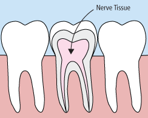
Sealants
Sometimes brushing is not enough, especially when it comes to those hard-to-reach spots in your mouth. It is difficult for your toothbrush to get in-between the small cracks and grooves on your teeth. If left alone, those tiny areas can develop tooth decay. Sealants give your teeth extra protection against decay and help prevent cavities.
Dental sealants are plastic resins that bond and harden in the deep grooves on your tooth’s surface. When a tooth is sealed, the tiny grooves become smooth and are less likely to harbor plaque. With sealants, brushing your teeth becomes easier and more effective against tooth decay.
Sealants are typically applied to children’s teeth as a preventive measure against tooth decay after the permanent teeth have erupted. However, adults can also receive sealants on healthy teeth. It is more common to seal “permanent” teeth rather than “baby” teeth, but every patient has unique needs, and your dentist will recommend sealants on a case-by-case basis.
Sealants last from three to five years, but it is fairly common to see adults with sealants still intact from their childhood. A dental sealant only provides protection when it is fully intact, so if your sealants come off, let your dentist know, and schedule an appointment for your teeth to be re-sealed.
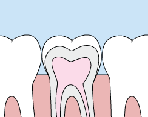
Veneers
You no longer need to hide your smile because of gaps, chips, stains, or misshapen teeth. With veneers, you can easily correct your teeth’s imperfections to help you have a more confident, beautiful smile. Veneers are natural in appearance, and they are a perfect option for patients wanting to make minor adjustments to the look and feel of their smile.
Veneers are thin, custom-made shells made from tooth-colored materials (such as porcelain), and they are designed to cover the front side of your teeth. To prepare for veneers, your doctor will create a unique model of your teeth. This model is sent to the dental technician to create your veneers. Before placing your new veneer, your doctor may need to conservatively prepare your tooth to achieve the desired aesthetic result.
When your veneers are placed, you’ll be pleased to see that they look like your natural teeth. While veneers are stain-resistant, your doctor may recommend that you avoid coffee, tea, red wine, and tobacco to maintain the beauty of your new smile.
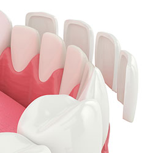
Wisdom Teeth
Wisdom teeth are types of molars found in the very back of your mouth. They usually appear in the late teens or early twenties, but may become impacted (fail to erupt) due to lack of room in the jaw or angle of entry. When a wisdom tooth is impacted, it may need to be removed. If it is not removed, you may develop gum tenderness, swelling, or even severe pain. Impacted wisdom teeth that are partially or fully erupted tend to be quite difficult to clean and are susceptible to tooth decay, recurring infections, and even gum disease.
Wisdom teeth are typically removed in the late teens or early twenties because there is a greater chance that the teeth’s roots have not fully formed and the bone surrounding the teeth is less dense. These two factors can make extraction easier as well as shorten the recovery time.
In order to remove a wisdom tooth, your dentist first needs to numb the area around the tooth with a local anesthetic. Since the impacted tooth may still be under the gums and imbedded in your jaw bone, your dentist will need to remove a portion of the covering bone to extract the tooth. In order to minimize the amount of bone that is removed with the tooth, your dentist will often “section” your wisdom tooth so that each piece can be removed through a small opening in the bone. Once your wisdom teeth have been extracted, the healing process begins. Depending on the degree of difficulty related to the extraction, healing time varies. Your dentist will share with you what to expect and provide instructions for a comfortable, efficient healing process.
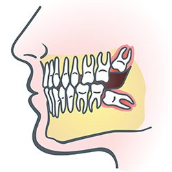